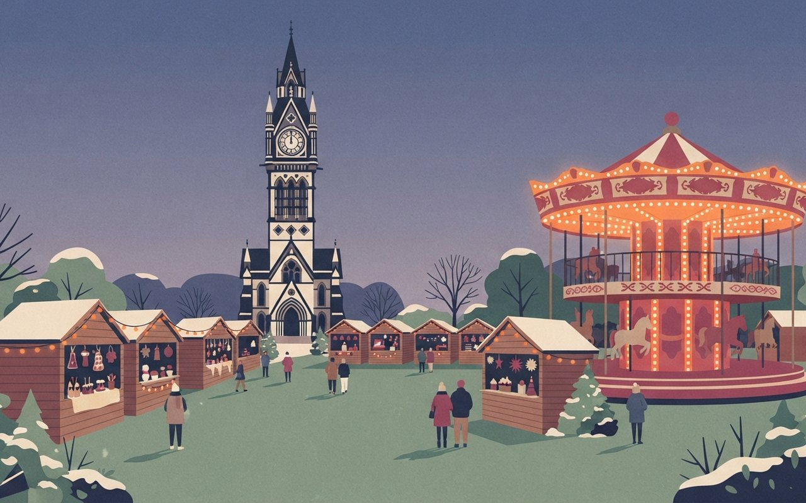

롯데타운 크리스마스 마켓 19일 개막, 내년 1월 3일까지 46일 — 40여 부스·매일 오후 6시 조명 쇼, 무료 입장은 예약
'2026 롯데타운 크리스마스 마켓'이 11월 19일(목)부터 2027년 1월 3일까지 46일간 서울 송파구 잠실 월드파크 야외 잔디광장에서 열린다. 17m 높이의 시계탑과 2층 회전목마가 서고, 40여 개 부스 가운데 20여 개는 유명 맛집·셰프 브랜드로 채운다. 주말 저녁에는 캐럴·뮤지컬 공연이 두 번씩 열린다(파이낸셜뉴스).
입장권은 무료 일반 예약권과 할인 혜택이 든 '패스트패스' 두 가지로, 롯데백화점몰과 네이버에서 예약한다. 매일 오후 6시에는 조명과 음악이 어우러진 '크리스마스 타임 쇼'가 열린다(뉴스핌). 운영 시간과 패스트패스 가격은 기사에 없다 — 공식 홈페이지 확인 권장.
- 기간·장소11/19(목)~2027/1/3 · 46일 · 잠실 월드파크 야외 잔디광장
- 구성17m 시계탑 · 2층 회전목마 · 40여 부스(20여 개는 맛집·셰프 브랜드)
- 입장무료 일반 예약권 · 할인 혜택 '패스트패스' · 롯데백화점몰·네이버 예약(1차 예약 11/9 시작)
- 공연매일 18:00부터 크리스마스 타임 쇼 · 주말 저녁 캐럴·뮤지컬 공연 각 2회
- 주의운영 시간·패스트패스 가격은 기사에 없음 ⚠ 변동 가능 · 공식 홈페이지 확인 권장
올해부터 해마다 나라 하나를 골라 꾸미는 방식으로 바뀌었고, 올해 주제는 '19세기 영국'이다. 그래서 고든램지 키친의 피시앤드칩스, 바버와 '월레스와 그로밋'의 협업 상품처럼 영국 브랜드가 많다(파이낸셜뉴스). 오후 6시 조명 쇼에 맞춰 해 질 무렵 도착하면 낮과 밤 풍경을 함께 볼 수 있다.
잠실 크리스마스 마켓,
내년 1월 3일까지 46일
내년 1월 3일(일)까지 잠실 월드파크 잔디광장에 시계탑과 2층 회전목마가 섰어요. 무료 입장도 예약이 필요하고, 매일 오후 6시엔 조명 쇼가 열려요.
서울 송파
2026-11-19~2027-01-03
18:00|매일 크리스마스 타임 쇼 · 무료 예약 입장
An outdoor Christmas market on a city lawn at dusk with a tall Victorian-style clock tower, a two-level carousel and rows of small wooden stalls with warm string lights, no people faces, flat illustration, no text, no logos
